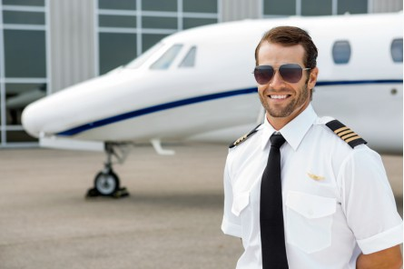
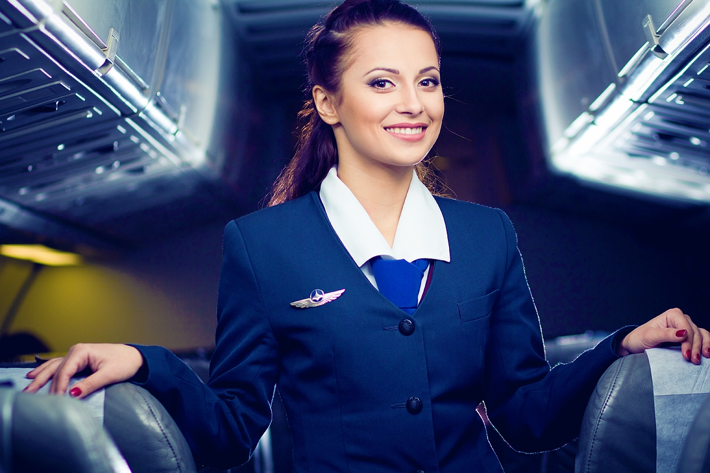
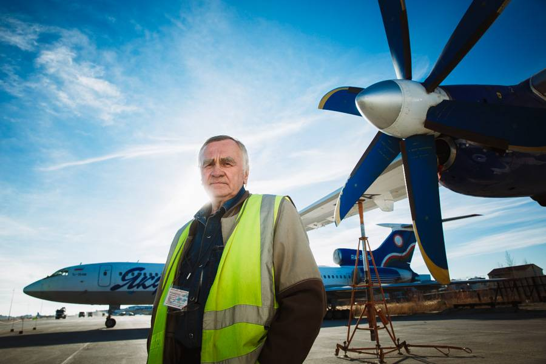
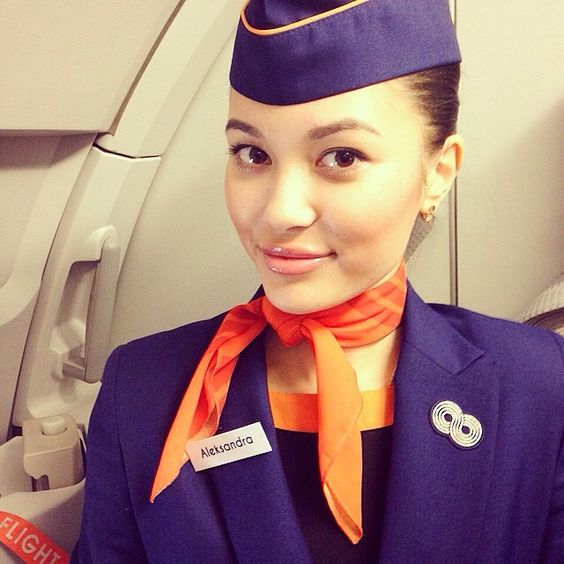

Экипаж
-
Самохин Сергей Сeргеевич
Главный пилот
Высокий профессионализм, честь и отвага – все это характеристики главного пилота Белова А.В. На его счету более 700 полетов. Награжден за мужество и отвагу указом президента. -
Слободская Жанна Олеговна
Стюардесса
Благодаря деятельности этого человека, на борту самолета клиенты чувствуют себя, как дома. Инна Николаевна чутко относится ко всем требованиям клиентов, очень любит детей и всячески помогает сделать полет комфортным и приятным. -
Иванов Петр Петрович
Борт механик
Человек с золотыми руками, инженер и конструктор от Бога! Борис Анатольевич работает уже более 50 лет и на своем веку видел, как из старых моделей самолетов появлялись настоящие авиа шедевры. -
Приходько Николай Дмитриевич

Капитан
Правая рука главного пилота, опытный и отважный помощник. О своей работе в шутку говорит так «Наше дело правое, не мешать левому». Опыт работы составляет 18 лет, внимательно относится ко всем деталям и считает свою работу – делом жизни. -
Самойлова Ангелина Вадимовна
Диспетчер
Ей присущ внимательный подход к расчетам, а отменная память удивляет даже самых опытных членов экипажа. За 22 года работы она стажировала более 100 диспетчеров для работы в крупнейших аэропортах страны. Знает в совершенстве 5 иностранных языков -
Безупречная Анастасия Станиславовна
Страшая стюардесса
Вежливая улыбка, внимательность к деталям и большой опыт работы – это лишь малая часть достоинств Елены Николаевны. Старший бортпроводник задает тон всей поездке, поэтому клиенты, которые летят с ней, заряжаются отличным настроением и гармонией.